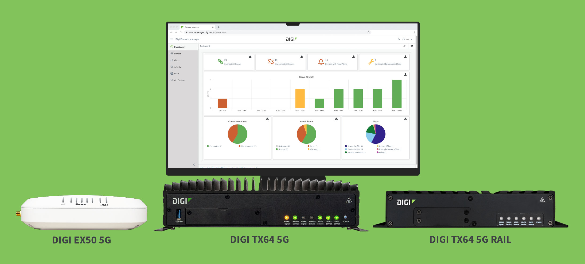
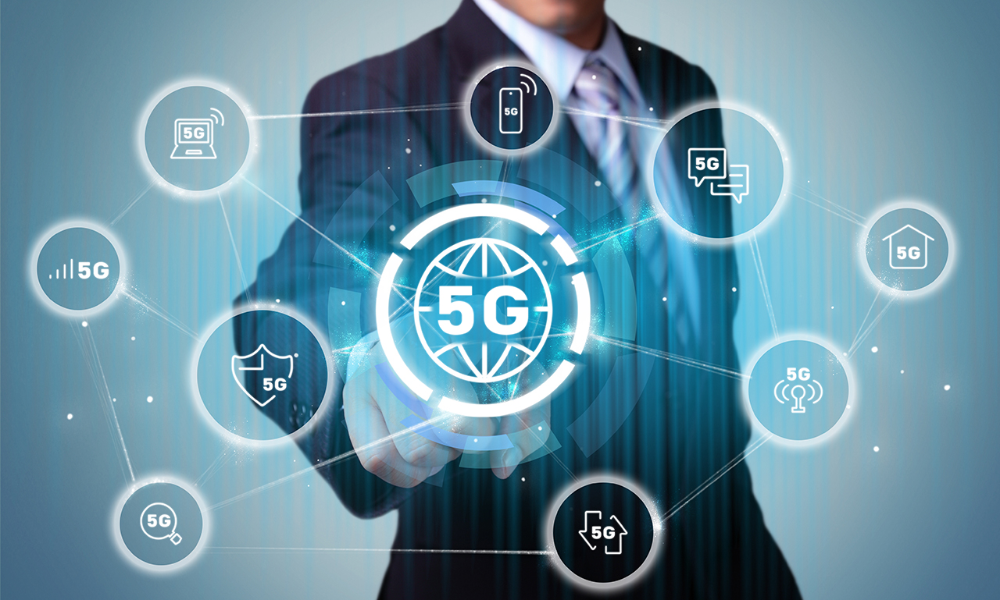
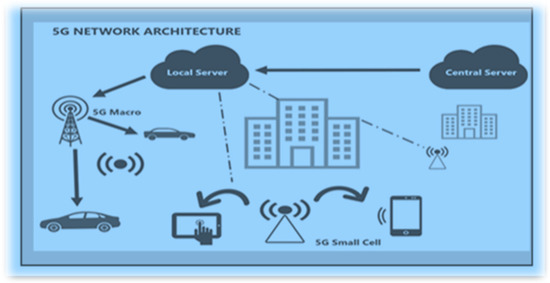
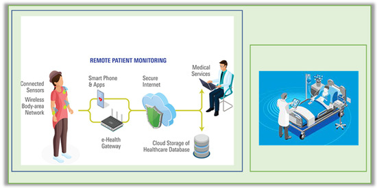
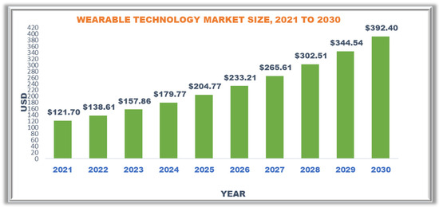
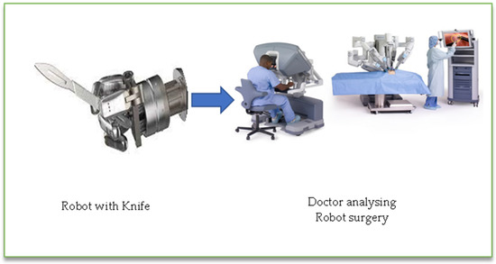
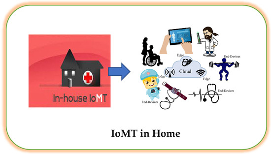

services
5G Technology
Smarter systems, faster connections, limitless potential.
Smarter systems, faster connections, limitless potential.
5G isn’t just about faster internet speeds, it’s about transforming how we live and work. It will power the technology behind smartphones, autonomous cars, and advanced healthcare. 5G will help improve our daily lives and business operations by supporting more technology and better services.
When council workers dug up the fibre link outside the main campus of a leading private school in Melbourne there was a total loss of internet access for more than 24 hours with serious impact on teaching and learning outcomes.
MobileCorp has since deployed a 5G wireless failover solution to provide link diversity and protect against future outages.
We utilized a Cradlepoint 5G edge router with intelligent traffic prioritisation and cloud management to automatically failover to cellular should the dark fibre link be compromised.
In 2020, when the pandemic meant students across the globe were suddenly immersed in home schooling, the South Bend Community School Corporation in the US sent dozens of connected school buses to park in community open spaces so all its students could safely access Wi-Fi.
The students Chromebooks were automatically connected to one SSID, while a second SSID was reserved for the general community.
Their motto - leave no student offline.
A unified approach to edge security that delivers NSW CSP compliance, application-level control, analytics-rich content filtering, segmentation, and secure device-to-cloud IoT connections.
A recent study found a 78 percent increase in learning outcomes when students used a VR simulation and a 101 percent increase when VR was used in combination with traditional teaching.
A recent study found a 78 percent increase in learning outcomes when students used a VR simulation and a 101 percent increase when VR was used in combination with traditional teaching.
A recent study found a 78 percent increase in learning outcomes when students used a VR simulation and a 101 percent increase when VR was used in combination with traditional teaching.

A recent study found a 78 percent increase in learning outcomes when students used a VR simulation and a 101 percent increase when VR was used in combination with traditional teaching.

A recent study found a 78 percent increase in learning outcomes when students used a VR simulation and a 101 percent increase when VR was used in combination with traditional teaching.

When council workers dug up the fibre link outside the main campus of a leading private school in Melbourne there was a total loss of internet access for more than 24 hours with serious impact on teaching and learning outcomes.
MobileCorp has since deployed a 5G wireless failover solution to provide link diversity and protect against future outages.
We utilized a Cradlepoint 5G edge router with intelligent traffic prioritisation and cloud management to automatically failover to cellular should the dark fibre link be compromised.

In 2020, when the pandemic meant students across the globe were suddenly immersed in home schooling, the South Bend Community School Corporation in the US sent dozens of connected school buses to park in community open spaces so all its students could safely access Wi-Fi.
The students Chromebooks were automatically connected to one SSID, while a second SSID was reserved for the general community.
Their motto - leave no student offline.

A unified approach to edge security that delivers NSW CSP compliance, application-level control, analytics-rich content filtering, segmentation, and secure device-to-cloud IoT connections.

A recent study found a 78 percent increase in learning outcomes when students used a VR simulation and a 101 percent increase when VR was used in combination with traditional teaching.

A recent study found a 78 percent increase in learning outcomes when students used a VR simulation and a 101 percent increase when VR was used in combination with traditional teaching.
Pros and Cons
| Pros | Cons |
|---|---|
| Experience the revolutionary benefits of 5G technology, offering ultra-fast internet speeds, minimal lag, and enhanced connectivity. It supports smarter cities, advanced healthcare solutions, and seamless digital experiences, empowering industries like education, gaming, and automation. | Despite its advantages, the adoption of 5G comes with challenges, including high infrastructure costs, limited initial coverage in rural areas, and potential interference with existing networks. There are also concerns over security, privacy, and the long-term sustainability of the technology. |
| ✓ Ultra-Fast Speeds | ✗ High Infrastructure Costs |
| ➥ 5G comes with ultra-fast internet speeds, more reliable communication for businesses, healthcare, education, and everyday users | ➥ Setting up 5G requires significant investment in new towers, antennas, and compatible equipment making it expensive for carriers and enterprises to implement. |
| ✓ Latency | ✗ Limited Initial Coverage |
| ➥ 5G is designed to stable network, resulting in smoother browsing and for better video streaming, gaming, and virtual reality experiences. Integrating 5G with smart devices, industries, and automation for improved efficiency. | ➥ 5G is first being deployed in urban areas, leaving rural and remote locations with slower access and limited service in the early phases of rollout. |
| ✓ Connectivity | ✗ Interference & Security Concerns |
| ➥ 5G supports 100x more connected devices for stable browsing, Network deployment in urban Areas and gradual expansion to rural locations. | ➥ 5G may cause interference with existing networks and devices. There are also ongoing concerns around data security, privacy, and the vulnerability of connected systems. |